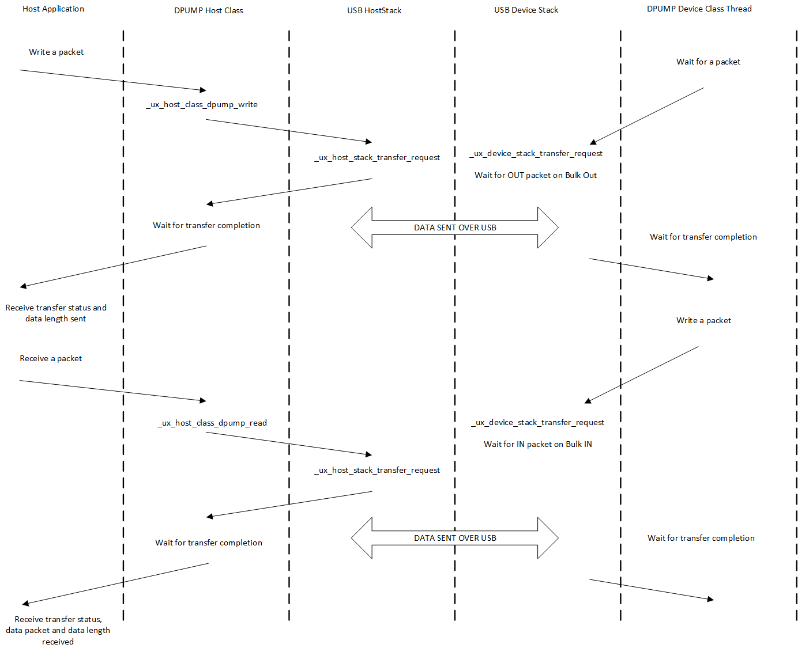

Chapter 3: USBX DPUMP Class Considerations
USBX contains a DPUMP class for the host and device side. This class is not a standard class in itself, but rather an example that illustrates how to create a simple device by using two bulk pipes and sending data back and forth on these two pipes. The DPUMP class could be used to start a custom class or for legacy RS232 devices.
USB DPUMP flow chart:

USBX DPUMP Host Class
The host side of the DPUMP Class has two functions, one for sending data and one for receiving data:
-
ux_host_class_dpump_write -
ux_host_class_dpump_read
Both functions are blocking to make the DPUMP application easier. If it is necessary to have both pipes (IN and OUT) running at the same time, the application will be required to create a transmit thread and a receive thread.
The prototype for the writing function is as follows.
UINT ux_host_class_dpump_write(UX_HOST_CLASS_DPUMP *dpump,
UCHAR *data_pointer,
ULONG requested_length,
ULONG *actual_length)Where:
-
dpump is the instance of the class
-
data_pointer is the pointer to the buffer to be sent
-
requested_length is the length to send
-
actual_length is the length sent after completion of the transfer, either successfully or partially.
The prototype for the receiving function is similar.
UINT ux_host_class_dpump_read(
UX_HOST_CLASS_DPUMP *dpump,
UCHAR *data_pointer,
ULONG requested_length,
ULONG *actual_length)Here is an example of the host DPUMP class where an application writes a packet to the device side and receives the same packet on the reception:
/* We start with a 'A' in buffer. */
current_char = 'A';
while(1)
{
/* Initialize the write buffer. */
ux_utility_memory_set(out_buffer, current_char,
UX_HOST_CLASS_DPUMP_PACKET_SIZE);
/* Increment the character in buffer. */
current_char++;
/* Check for upper alphabet limit. */
if (current_char > 'Z')
current_char = 'A';
/* Write to the Data Pump Bulk out endpoint. */
status = ux_host_class_dpump_write (dpump, out_buffer,
UX_HOST_CLASS_DPUMP_PACKET_SIZE,
&actual_length);
/* Verify that the status and the amount of data is correct. */
if ((status == UX_SUCCESS) && actual_length == UX_HOST_CLASS_DPUMP_PACKET_SIZE)
{
/* Read to the Data Pump Bulk out endpoint. */
status = ux_host_class_dpump_read (dpump, in_buffer,
UX_HOST_CLASS_DPUMP_PACKET_SIZE, &actual_length);
}
}USBX DPUMP Device Class
The device DPUMP class uses a thread, which is started upon connection to the USB host. The thread waits for a packet coming on the Bulk Out endpoint. When a packet is received, it copies the content to the Bulk In endpoint buffer and posts a transaction on this endpoint, waiting for the host to issue a request to read from this endpoint. This provides a loopback mechanism between the Bulk Out and Bulk In endpoints.